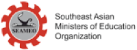

Selain kerjasama antar dua negara yang berbeda untuk mencapai tujuan bersama, ada kerjasama bilateral yang melibatkan beberapa negara dalam suatu kawasan tertentu. Salah satu contoh kerjasama untuk pendidikan yang berkualitas adalah SEAMEO. Organisasi Menteri Pendidikan Asia Tenggara (SEAMEO) didirikan oleh Menteri Pendidikan di negara-negara Asia Tenggara yang berfokus pada mendorong kerja sama di bidang pendidikan, sains, dan budaya di antara negara-negara Asia Tenggara. Pendirian SEAMEO merupakan hasil dari pertemuan lima negara (Lao PDR, Malaysia, Singapura, Thailand, dan Vietnam) pada tahun 1965. SEAMEO mendukung pengembangan pendidikan melalui pusat-pusat regional khusus yang menyediakan pelatihan, penelitian, dan peluang jaringan. Salah satu pusat tersebut adalah SEAMEO QITEP in Language yang berlokasi di Indonesia. Pusat ini bertujuan meningkatkan kualitas pendidikan bahasa dengan menyediakan program pengembangan profesional, inisiatif penelitian, dan sumber daya yang disesuaikan untuk pendidik dan pembuat kebijakan di seluruh kawasan.
Selain itu, Indonesia juga menjadi rumah bagi pusat-pusat lain, seperti SEAMEO BIOTROP yang berfokus pada biologi tropis dan SEAMEO CECCEP yang menekankan pada pendidikan anak usia dini serta pengasuhan anak. Inisiatif-inisiatif ini memperkuat kapasitas pendidik di Indonesia dan selaras dengan tujuan regional untuk meningkatkan kualitas pendidikan di Asia Tenggara secara keseluruhan. Program-program SEAMEO memenuhi berbagai kebutuhan, seperti pendidikan bahasa, pelatihan guru, pendidikan anak usia dini, serta pendidikan teknis dan kejuruan. Organisasi ini bekerja sama dengan badan internasional seperti UNESCO dan ASEAN untuk menyelaraskan usahanya dengan tujuan pendidikan global.
Kerjasama seperti ini juga sangat relevan dengan pencapaian SDGs ke-4, yang bertujuan untuk memastikan pendidikan yang inklusif, adil, dan berkualitas untuk semua. Melalui program-program yang ditawarkan oleh SEAMEO, negara-negara di kawasan Asia Tenggara, termasuk Indonesia, dapat bekerja sama untuk meningkatkan kualitas pendidikan, pelatihan guru, dan akses terhadap pendidikan yang lebih merata. Salah satu inisiatif SEAMEO QITEP in Language adalah mendukung SDG ke-4 dengan meningkatkan kemampuan pendidik dalam bidang bahasa, yang sangat penting untuk memastikan kualitas pengajaran dan pembelajaran yang lebih baik. Dengan melibatkan berbagai negara dalam kolaborasi regional, SEAMEO turut berkontribusi pada pencapaian tujuan pendidikan global yang lebih luas, yang juga sejalan dengan prioritas Indonesia dalam mencapai pendidikan yang berkualitas untuk semua.